Viste e grafica
Questo capitolo descrive le viste del modello, come viene disegnata ciascuna e come cambiare ciò che una vista mostra e in che modo: stili grafici, scala e dettaglio, le altezze di taglio di una pianta, le regioni di taglio, nascondere e isolare, Visibilità e grafica, filtri e modelli vista. Spessori di linea, motivi di linea e stili per categoria sono descritti negli stessi termini dalle finestre del programma di Impostazioni nella barra laterale.
Viste 3D
Viste ▸ Crea ▸ Vista 3D ▸ Vista 3D predefinita apre la vista 3D predefinita, {3D}, inquadrando l'intero modello; aperta di nuovo, mostra il modello come lo si era lasciato. Trascina per orbitare (oppure Maiusc e il pulsante centrale), trascina con il pulsante centrale per eseguire una panoramica e gira la rotellina per ingrandire sul cursore; vedi L'interfaccia.
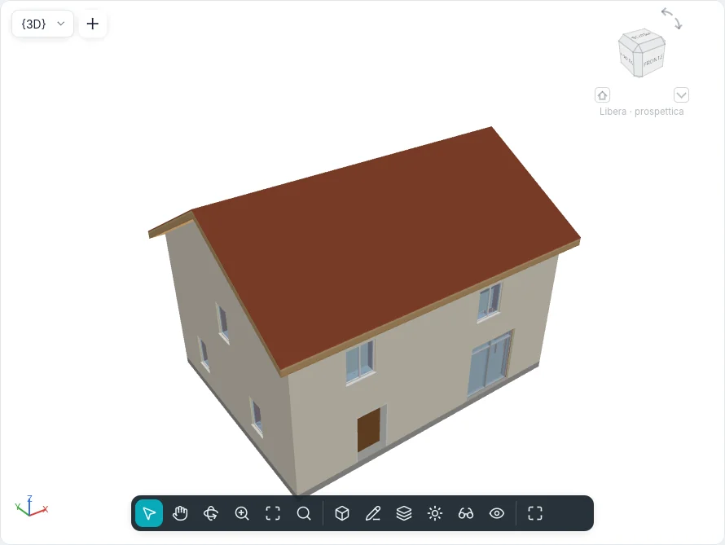
Per conservare un'inquadratura, Viste ▸ Crea ▸ Vista 3D ▸ Salva vista: digita un nome e premi Invio. La nuova vista compare tra le Viste 3D nell'Indice del progetto e si apre subito; mantiene l'inquadratura con cui è stata lasciata. Anche rinominare {3D} nell'Indice del progetto (clic destro ▸ Rinomina…) ha lo stesso effetto: {3D} diventa una vista con un nome e la successiva vista 3D predefinita è una nuova {3D}.
Un elemento selezionato è velato di blu e semitrasparente, con i bordi blu: ciò che gli sta dietro resta visibile.
I pavimenti tagliano i muri che attraversano: dove una soletta incrocia un muro, il muro si ferma sotto di essa e prosegue sopra, così il bordo della soletta e la faccia del muro sono un'unica superficie.
Stili grafici
Il pulsante Stile grafico della barra di controllo della vista, in basso in ogni finestra di vista, offre:
| Stile | Che cosa viene disegnato |
|---|---|
| Wireframe | Tutti i bordi, anche quelli dietro altre facce; nessuna faccia |
| Linee | Le facce come carta bianca e i bordi che stanno davanti in inchiostro scuro, sullo sfondo chiaro come su quello scuro |
| Ombreggiato | Le facce illuminate, nel colore del loro materiale |
| Ombreggiato con bordi | Come Ombreggiato, con i bordi davanti |
| Colori pieni | Le facce nel colore del loro materiale, uguale con qualsiasi luce |
| Realistico | Le facce come in una fotografia: la luce del sole e del cielo del progetto, i riflessi, le ombre d’ambiente, il vetro trasparente, la foschia |

Lo stile appartiene alla vista e si può annullare. Le scorciatoie da tastiera WF, HL e SD
scelgono Wireframe, Linee e Ombreggiato.
I bordi sono quelli reali: dove due facce si incontrano ad angolo, e il contorno di ogni faccia e di ogni apertura. Un muro con una finestra mostra il proprio contorno e quello della finestra, e nessuna linea dove si incontrano i pezzi del muro.
Anche piante, sezioni e prospetti hanno uno stile grafico. Una pianta è disegnata in Linee finché non si sceglie un altro stile. In Linee le superfici, tagliate o viste, non sono colorate: ciò che è tagliato mostra il motivo di sezione del suo materiale; al livello di dettaglio Basso il retino a dettaglio basso del tipo, altrimenti solo il contorno. In Ombreggiato, Ombreggiato con bordi e Colori pieni ogni elemento visto o tagliato è riempito con il colore di ombreggiatura del suo materiale (una parte senza materiale prende quello della sua categoria, da Stili per categoria, altrimenti il colore predefinito della categoria; la vista 3D segue la stessa regola): muri (ogni strato dove è tagliato), pavimenti, tetti, porte, finestre, arredi e componenti, scale e ringhiere. Le piante sono piatte; in sezioni e prospetti Ombreggiato scurisce un poco le facce girate rispetto a chi guarda, come le falde di un tetto, mentre Colori pieni le lascia tutte uguali. Ai livelli di dettaglio Medio e Alto i motivi di sezione restano sopra il colore. Tavole, stampe e disegni esportati mostrano le viste come lo schermo.
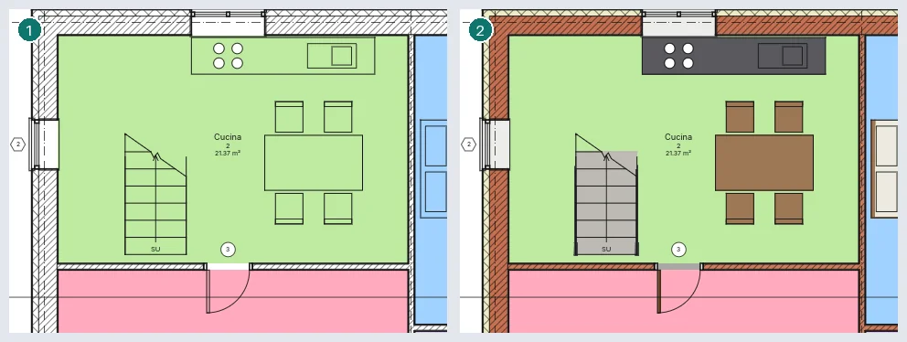
Lo schema di colori dei locali si vede in ogni stile. Con Posizione schema colori su Sfondo sta sotto le linee del modello: in pianta sopra i pavimenti e sotto gli arredi, in sezione sopra le superfici viste attraverso ogni locale tagliato. Su Primo piano copre il modello, sotto le annotazioni.
Stile Realistico
Realistico disegna la vista 3D come una fotografia, in tempo reale, con la scheda grafica, e la vista resta modificabile come negli altri stili.
- Luce del sole e del cielo. La luce è quella del sole del progetto (luogo, data e ora delle Impostazioni del sole) e del cielo che quel sole dà: azzurro di giorno, più caldo e più scuro al tramonto. Il sole illumina anche con le ombre spente; con Proietta ombre le sue ombre sono quelle degli altri stili. La parte in ombra resta illuminata dal cielo e dal terreno. Il disco del sole compare quando entra nell'inquadratura, con un alone, e il modello lo nasconde. Verso il tramonto la luce del sole si fa calda e più debole e le ombre si allungano; dopo il tramonto resta solo il cielo, che si spegne in un crepuscolo blu-viola con una fascia rosata sull'orizzonte dalla parte del sole; di notte il cielo è blu scuro e la scena quasi buia (le superfici autoilluminate restano visibili). Trascinando il sole o seguendo uno studio del soleggiamento la luce cambia con continuità.
- Luna e stelle. La luna è dove si trova nel luogo, alla data e all'ora del progetto, nella sua fase: illuminata sul lato rivolto al sole, il resto appena grigio (luce cinerea), più rossa vicino all'orizzonte. Di notte è lei la luce: con Proietta ombre il modello fa le ombre della luna, e la luna piena illumina la scena con dolcezza mentre la luna nuova la lascia quasi buia. Tramontato il sole compaiono le stelle più luminose al loro posto, tanto più numerose quanto più il cielo è scuro.
- Materiali. Le superfici hanno l'aspetto del loro materiale (scheda Aspetto di Materiali): l'immagine della trama alla sua dimensione reale, la ruvidità e la sua mappa, il rilievo, il metallo, il vetro e l'acqua, l'autoilluminazione (si vede, non illumina gli altri). Un materiale senza aspetto proprio lo ricava dal suo colore e dalla sua trasparenza; una parte senza materiale prende il colore della sua categoria. Sul web le immagini arrivano dopo: finché non ci sono si vede il colore. L'anteprima della scheda Aspetto è disegnata dallo stesso renderer, su una sfera, un cubo o una parete di 2 × 2 m (senza scheda grafica, da un'immagine calcolata a parte).
- Vetro. Il vetro lascia vedere ciò che c'è dietro e riflette il cielo e il sole, di più quando lo si guarda di sbieco. I vetri sono disegnati dal più lontano al più vicino.
- Ombre d'ambiente. Con Ombre d'ambiente gli angoli e gli incavi, dove arriva meno luce del cielo, sono più scuri.
- Foschia. In lontananza l'aria vela il modello: Foschia in lontananza ne regola la quantità e rende il cielo più o meno limpido.
- Esposizione. Automatica segue la luce della scena e si adatta in circa mezzo secondo quando cambia (girando la camera dal cielo all'ombra, o cambiando l'ora). Manuale usa il Valore (EV): più alto è più scuro, circa 15 sotto il sole di mezzogiorno.
Nel gruppo Realistico delle Opzioni grafiche della vista: Esposizione e Valore (EV), Punto del bianco (la luce mostrata bianca: 6500 K è la luce del giorno così com'è, un valore più basso raffredda l'immagine, uno più alto la scalda), Saturazione, Alte luci e Toni scuri (abbassano o alzano i toni più chiari e più scuri) e Foschia in lontananza. Mostra bordi nel Realistico disegna i bordi sopra le facce. Lo Schema di illuminazione è per ora sempre Esterno: sole. Sole, Luce d'ambiente e Intensità delle ombre regolano la luce del sole, quella del cielo e quanto sono scure le ombre del sole.
Lo Sfondo Cielo fisico (ora e luogo) mostra dietro al modello lo stesso cielo che lo illumina, con il disco del sole; con Nessuno, Cielo o Sfumatura lo sfondo resta quello scelto e il cielo illumina comunque il modello. Passando a Realistico, una vista con lo sfondo Nessuno prende Cielo fisico (ora e luogo). Gli elementi selezionati e la traiettoria del sole si vedono come negli altri stili.
Sul web senza WebGPU (con WebGL2) il Realistico funziona senza ombre d'ambiente e l'esposizione automatica si regola dal cielo invece che dall'immagine. Sul web e su Android, mentre la camera si muove, la vista può essere disegnata più piccola per restare fluida, e torna nitida quando si ferma. Senza scheda grafica il Realistico si vede come Ombreggiato e la barra di stato lo dice. Piante, sezioni e prospetti in Realistico sono per ora disegnati come in Ombreggiato; tavole, stampe e immagini esportate non mostrano ancora il Realistico.
Sole e ombre
Piante, sezioni, prospetti e viste 3D mostrano il sole (le viste di disegno, le legende, le tavole e gli abachi no). La barra di controllo della vista ha due pulsanti, ciascuno con una piccola freccia per il suo menu (lo apre anche il tasto destro):
- Traiettoria del sole: il suo menu ha Mostra la traiettoria del sole / Nascondi la traiettoria del sole, Impostazioni del sole… e Adatta al modello (inquadra la traiettoria intera);
- Ombre: il suo menu ha Attiva le ombre / Disattiva le ombre, Opzioni grafiche della vista… e Anteprima dello studio del soleggiamento.
Mentre uno dei due è attivo, la barra mostra anche l'ora e la data del sole, ciascuna con − e + (un quarto d'ora, un giorno). Gli stessi pulsanti e menu sono nel menu Sole e ombre della barra della vista nello stile BIMopen, nel foglio della vista della modalità touch e nel menu contestuale della vista. Traiettoria del sole è anche una casella delle Proprietà della vista (Grafica), con Dimensione della traiettoria (100–500 %, 150 % se non cambiata) e Sole comune.
Le ombre si calcolano dal modello e dal sole, uguali in ogni vista: in pianta cadono su ciò che la pianta mostra e, dove non c'è nulla, sul piano di un livello (Ombre sul livello nelle impostazioni del sole, altrimenti sul terreno, il livello più basso); in sezione e in prospetto cadono sulle facciate e su ciò che sta dietro, da gronde, balconi, rientranze e altri edifici; nelle viste 3D le disegna la scheda grafica (il processore quando non c'è). In Linee (linee nascoste) un'ombra è un grigio della carta, negli stili ombreggiati scurisce i colori dei materiali. Le facce tagliate dalla vista restano in luce.
La traiettoria del sole è un anello intorno al modello con i punti cardinali al nord vero, l'arco del giorno con le sue ore, l'analemma (dove sta il sole a quell'ora durante l'anno: un otto continuo, ogni giorno all'ora d'orologio della data scelta), il tratto che uno studio percorre, e il sole con la sua ora e data; in una vista 3D è una cupola sopra l'anello. In pianta, in sezione, in prospetto e in 3D il sole si trascina: lungo il giorno si aggancia ai quarti d'ora, lungo l'anno segue l'analemma giorno per giorno (al cambio dell'ora legale l'orologio si sposta del cambio, così il sole non salta); Shift mentre trascini prende l'altro, e Lungo la giornata / Lungo l’anno nel menu della traiettoria scelgono quale viene prima. Le ombre seguono il trascinamento: in pianta, in sezione e in prospetto, mentre il sole si muove, sono una bozza più grossolana, ogni vista mostra le sue ultime ombre finché le nuove non sono pronte, e sono disegnate per intero quando il sole viene rilasciato. Con la vista sotto il cursore (e nulla selezionato, o dopo un clic sul sole), Left e Right spostano l'ora, Up e Down la data. Con Luce fissa il sole sta fermo e non ha traiettoria.
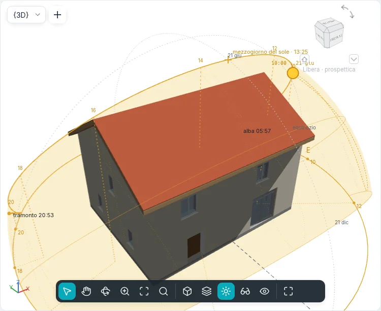
Il menu della traiettoria (nella barra della vista, nel menu della vista e in modalità touch) ha anche gli Aiuti visivi per leggerla: Linee verticali delle ore (da ogni ora pari una linea tratteggiata scende a terra e va all'anello, con l'ora lì; in pianta un punto sull'anello), Proiezione a terra dell’arco, Mezzogiorno del sole (il punto più alto dell'arco con la sua ora d'orologio, e la linea nord–sud), Fascia dell’anno (il cielo che il sole attraversa nell'anno, in giallo tenue, gli archi dei solstizi e dell'equinozio, gli analemmi delle ore pari), Alba e tramonto (segni sull'anello con le loro ore; la barra della vista le mostra con la durata del giorno) e Analemma; tutti tranne la proiezione sono attivi all'inizio. In una vista 3D ciò che sta dietro al modello è nascosto da esso. Le Impostazioni del sole mostrano anche albe e tramonti dell'anno in un grafico: un clic o un trascinamento sul grafico sceglie il giorno.
Sole comune: le viste condividono il sole del progetto, a meno che ne abbiano uno proprio (la proprietà Sole comune). Spostare il sole comune in una vista lo sposta in tutte le viste che lo condividono; una vista con il proprio sole non cambia. Sole comune a tutte le viste nelle impostazioni del sole riporta tutte le viste su di esso.
Ogni modifica è un passo di Annulla; il comando sun fa lo stesso dalla riga di comando e via
MCP (vedi Riga di comando e MCP).
Impostazioni del sole
Impostazioni del sole… apre una finestra con l'azimut, l'altezza, l'ora e la data del sole nell'intestazione:
- a sinistra le preimpostazioni: una riga non salvata per ogni modalità, quelle predefinite (Solstizio d’estate, Solstizio d’inverno, Equinozio di primavera, Equinozio d’autunno, Estate, dalle 9 alle 17, Luce dall’alto a destra) e quelle del progetto; Salva…, Duplica…, Rinomina… ed Elimina (si rinominano o si eliminano solo quelle del progetto);
- al centro la modalità e i suoi campi:
| Modalità | Che cosa chiede |
|---|---|
| Istante | la Data e l'Ora; Sole comune a tutte le viste |
| Un giorno | la Data, Dall’alba al tramonto o un'Ora di inizio e un'Ora di fine, l'Intervallo tra i fotogrammi (15, 30 o 45 minuti, 1 ora); ne segue il numero di Fotogrammi |
| Più giorni | Dal giorno e Al giorno (giorno/mese), l'Ora, l'Intervallo (1 ora, 1 giorno, 1 settimana, 1 mese) |
| Luce fissa | Azimut (°) e Altezza (°); Relativa alla vista: la luce segue la direzione della vista |
Poi la Località del progetto (una città, o Personalizzata con latitudine e longitudine: una sola per tutto il progetto; una località personalizzata prende il fuso orario della città più vicina; un nuovo progetto parte da Roma, la casa di esempio sta a Cagliari) con l'Ora legale, che è automatica: la regola del luogo (Europa, Nord America, Cile, Australia sud-orientale, Nuova Zelanda, Egitto, o nessuna) e la domenica esatta dell'Anno del sole, così le ore della traiettoria e degli studi sono quelle dell'orologio; la regola si può cambiare. Poi Ombre sul livello con il suo Livello del terreno; - a destra l'anteprima: il cielo visto dall'alto, con la traiettoria del giorno, l'analemma e il sole. Anteprima nell'intestazione, a destra dei valori, è un interruttore che la nasconde e la mostra; la finestra tiene la sua dimensione, e senza anteprima le impostazioni ne prendono lo spazio.
Applica cambia il sole della vista e lascia aperta la finestra, OK lo cambia e la chiude, Annulla non cambia nulla. I progetti fatti prima che il progetto avesse una località tengono il luogo e la data di ogni vista: la prima vista il cui sole era stato cambiato dà al progetto la sua località, e le viste il cui sole era stato cambiato tengono il loro come proprio.
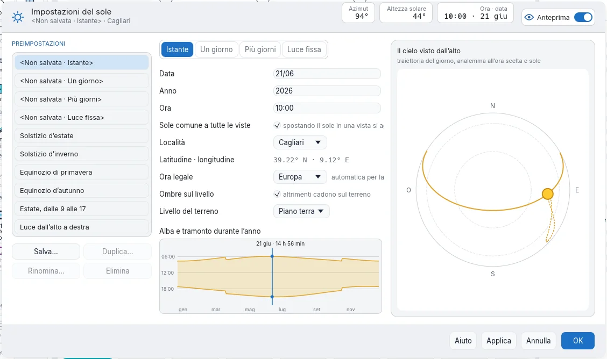
Studio del soleggiamento
Anteprima dello studio del soleggiamento (nel menu Ombre) mostra sopra la vista la barra dello studio: ⏮ −10, ⏴, ⏵ Riproduci / ⏸ Pausa, ⏵, +10 ⏭ e fotogramma n di N. Un sole di un istante si studia lungo il suo giorno. Salva come immagine salva il fotogramma mostrato come PNG con il nome della vista, la data e l'ora; Esporta studio… salva tutti i fotogrammi come sequenza di immagini PNG o JPEG (un filmato richiede un codificatore video che BIMopen non ha: la scelta è in grigio, con il motivo). × chiude la barra; la chiude anche un'altra vista.
Opzioni grafiche della vista
Opzioni grafiche della vista… imposta per la vista attiva: lo Stile di visualizzazione, il Contorno esterno (Nessuno, Medio, Spesso: una linea più spessa sul profilo esterno del modello), Proietta ombre, Ombre d’ambiente (angoli e incavi scuriti), il sole (il suo pulsante apre le Impostazioni del sole), Sole, Luce d’ambiente e Intensità delle ombre (0–100) e, per le viste 3D, lo Sfondo (Nessuno, Cielo, Sfumatura). L'anteprima disegna la vista con le opzioni scelte; l'interruttore Anteprima nell'intestazione la nasconde e la mostra, come nelle impostazioni del sole. I modelli di vista portano queste opzioni con lo stile di visualizzazione, e il sole e le ombre come Sole e ombre.
Il gruppo Realistico e Mostra bordi nel Realistico valgono per lo stile Realistico (vedi Stile Realistico); Sfondo offre anche Cielo fisico (ora e luogo). Con lo stile Realistico l'anteprima è disegnata dalla scheda grafica, come la vista.
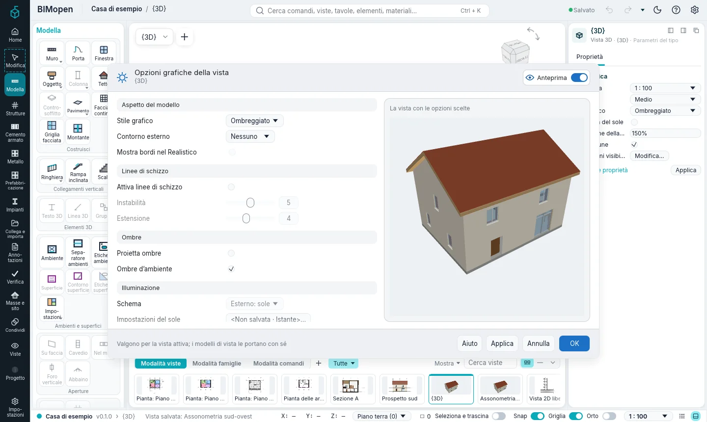
Linee di schizzo
Il gruppo Linee di schizzo delle Opzioni grafiche della vista… disegna le linee della vista come a mano. Attiva linee di schizzo le accende per la vista attiva; Instabilità (0–10) dice quanto ondeggia ogni linea e quante volte è ripassata (0 dritta, due volte da 4, tre volte da 8); le linee lunghe ondeggiano più delle corte. Estensione (0–10) dice quanto le linee oltrepassano i loro estremi, oltre gli spigoli dove si incontrano (0 le ferma lì). Partono da 5 e 4. Il pulsante ✎ della barra della vista (in ogni stile dell'interfaccia; in modalità touch, nel pannello della vista) le accende e le spegne per la vista attiva: Attiva linee di schizzo / Disattiva linee di schizzo.
Valgono in ogni vista (piante, sezioni, prospetti, viste di disegno, viste 3D, viste sulle tavole)
e in ogni stile di visualizzazione: per le linee del modello, dei componenti di dettaglio e dei
motivi di riempimento. Le annotazioni restano dritte: quote, testi, livelli, griglie, piani di
riferimento, etichette, simboli e contrassegni delle viste. Una vista disegna le stesse linee a ogni
ridisegno e dopo un'orbita che torna indietro, e si stampa e si esporta esattamente come la mostra
la finestra: PDF e SVG tengono le linee vettoriali, una sezione o un prospetto stampati lasciano
fuori solo le parti che le superfici più vicine nascondono. Selezione e snap usano sempre le linee
dritte. I modelli di vista portano l'impostazione con le altre opzioni grafiche. Dalla riga di
comando: graphicoptions {"sketchy":true,"instability":5,"extension":4}.
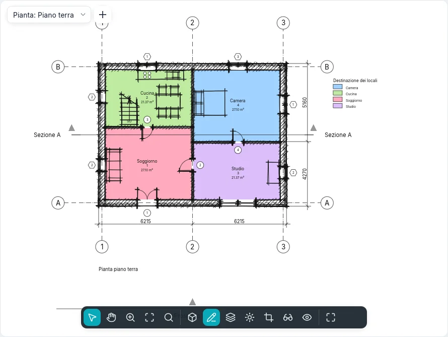
Piante e altezze di taglio
Viste ▸ Crea ▸ Pianta ▸ Pianta dei pavimenti apre Nuova pianta: scegli i livelli e la scala, poi OK. Con Non duplicare viste esistenti attivo, i livelli che hanno già una pianta vengono esclusi; disattivalo per fare una seconda pianta di un livello.
Una pianta è un taglio orizzontale del modello al Piano di taglio delle sue altezze di taglio. I muri che attraversano il piano di taglio sono disegnati tagliati, con i motivi di sezione dei materiali dei loro strati con il dettaglio Medio e Alto; i muri più bassi e i pavimenti del livello sono visti dall'alto.
Per cambiare le altezze di taglio, non selezionare nulla (così Proprietà mostra la vista), poi Altezze di taglio ▸ Modifica…. Ogni piano è misurato da un livello, con uno scostamento:
| Piano | Livello |
|---|---|
| Parte superiore | Il livello della pianta stessa (Livello associato), il Livello sopra, un livello per nome, oppure Illimitato |
| Piano di taglio | Sempre il livello della pianta stessa |
| Parte inferiore | Il livello della pianta stessa, il Livello sottostante o un livello per nome |
| Profondità della vista | Come Parte inferiore, oppure Illimitato |
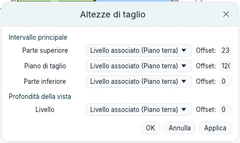
OK imposta i quattro piani insieme, come un'unica modifica. Devono restare in ordine, dall'alto in basso (parte superiore, piano di taglio, parte inferiore, profondità della vista): altrimenti la finestra spiega che cosa non va e resta aperta. I pavimenti sotto la parte inferiore, fino alla profondità della vista, sono disegnati oltre con linee sottili; lo stesso vale per i pavimenti poco sotto la parte inferiore, come una soletta ribassata, anche con la profondità della vista uguale alla parte inferiore.
Sfondo chiaro e scuro
Opzioni ▸ Tema ▸ Scuro (oppure Inverti colore sfondo) rende scura l'area di disegno. Come su uno sfondo invertito, linee, testi e motivi neri sono disegnati chiari, i colori mantengono la tinta, e i riempimenti a colori, come quelli dei locali, sono scuriti, così il testo sopra resta leggibile. Opzioni ▸ Dimensione interfaccia ingrandisce tutta l'interfaccia, dal 100 % al 250 %, in aggiunta alla scala dello schermo stesso: utile sugli schermi con molti pixel. Viene conservata per il prossimo avvio.
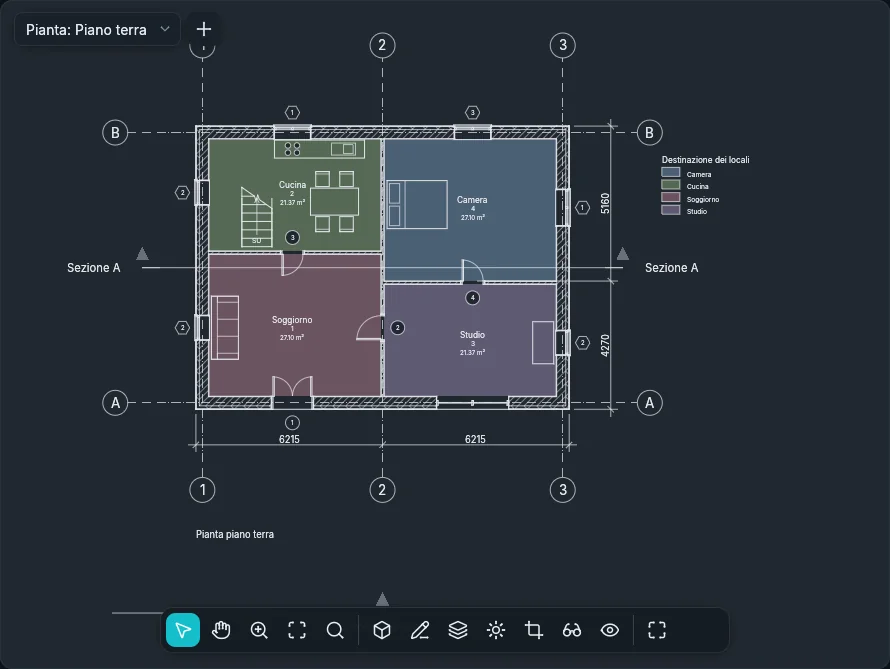
Aprire una vista dal suo simbolo
Fai doppio clic sul simbolo di una vista per aprirla: una linea di sezione o la sua testa, un simbolo di prospetto, il contorno di un dettaglio (un richiamo di riferimento apre la vista a cui punta), la linea di un livello in una sezione o in un prospetto (si apre la sua pianta), o una vista posizionata su una tavola. La finestra della vista diventa quella attiva.
Viste ▸ Crea ▸ Prospetto ▾ ▸ Prospetto telaio crea un prospetto di una griglia: fare clic accanto alla griglia, dal lato da cui guardarla (prima del clic una linea e una freccia mostrano la vista). Il prospetto guarda la griglia più vicina, largo quanto la campata tra le griglie che la incrociano e profondo fino alla griglia successiva parallela a essa.
Scala, dettaglio e regione di taglio
La barra di controllo della vista mostra la Scala vista e il Dettaglio della vista (anche nelle viste 3D).
- A una scala minore il modello è disegnato più piccolo sulla carta, mentre testi, etichette e simboli mantengono la loro dimensione sulla carta: in scala 1:200 un testo copre il doppio del modello rispetto alla scala 1:100.
- A Basso un muro tagliato è un unico riempimento; a Medio e Alto si vedono i suoi strati, ciascuno con il proprio materiale.
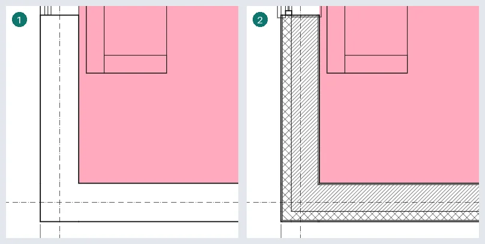
Le sezioni tagliano il modello allo stesso modo. Muri, pavimenti e tetti che si incontrano nel taglio sono disegnati come un tutto: un contorno spesso attorno, una linea sottile solo dove si incontrano due materiali, nessuna tra parti dello stesso materiale; i muri collegati a un tetto si fermano sotto di esso. Ogni strato tagliato ha il retino di sezione del suo materiale (a Basso, il Retino a dettaglio basso del tipo nel suo Colore del retino a dettaglio basso, impostabili sui tipi di muro, pavimento e tetto; altrimenti solo il contorno). Arredi e apparecchi sanitari non si tagliano mai: si vedono interi. Una finestra è tagliata con il telaio nella linea spessa di taglio e il vetro in linee sottili; ciò che sta oltre il taglio è disegnato con le linee di proiezione, più sottili. Oltre il taglio, e nei prospetti, una faccia davanti nasconde ciò che sta dietro, e il vetro di una finestra è opaco: ogni finestra mostra il suo telaio e il suo vetro, non i locali dietro.
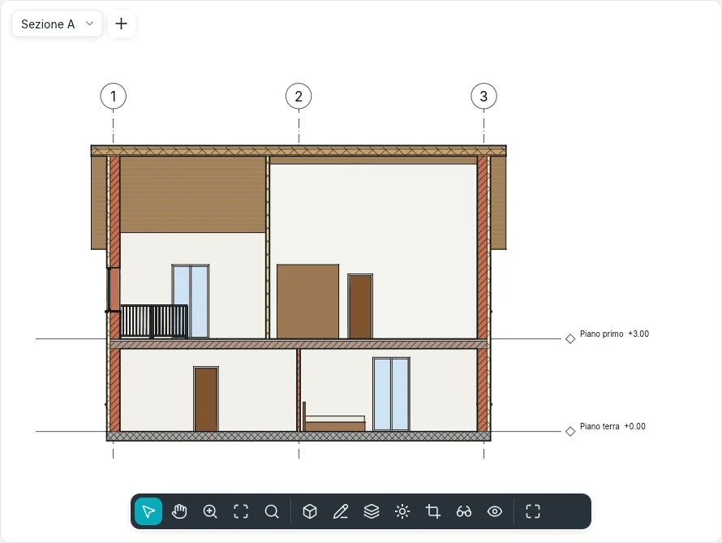
Ritaglia vista ritaglia la vista alla sua regione di taglio, Mostra regione di taglio disegna la regione; trascina i suoi bordi per ridimensionarla. Per digitarne la dimensione: Proprietà ▸ Dimensioni ritaglio ▸ Modifica…, poi Larghezza e Altezza; la regione mantiene il suo centro.
Nascondere e isolare
Isola temporaneamente (gli occhiali sulla barra di controllo della vista) agisce sugli elementi selezionati, solo nella vista attiva, e non modifica il progetto:
| Comando | Scorciatoia | Che cosa resta visibile |
|---|---|---|
| Isola elemento | HI |
Solo gli elementi selezionati |
| Nascondi elemento | HH |
Tutto tranne gli elementi selezionati |
| Isola categoria | IC |
Solo le categorie degli elementi selezionati |
| Nascondi categoria | HC |
Tutto tranne quelle categorie |
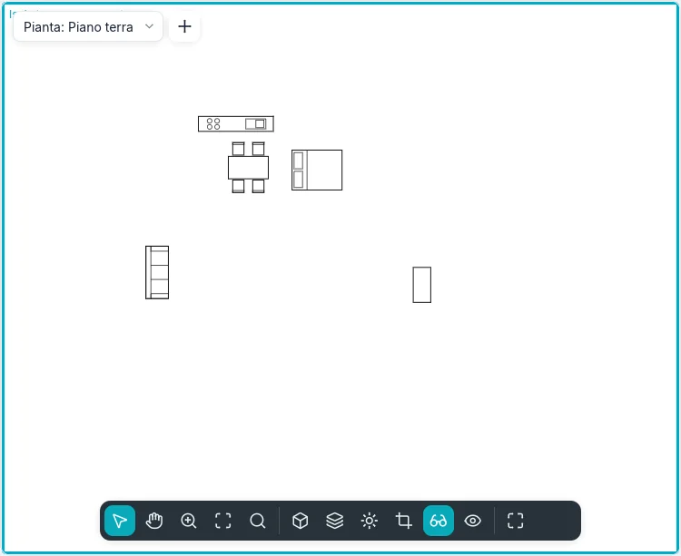
La vista riceve un bordo colorato. Ogni uso restringe ciò che viene mostrato: nascondere un
elemento e poi un altro nasconde entrambi. Ripristina Isola temporaneamente (HR)
mostra di nuovo tutto; Applica Nascondi/Isola alla vista nasconde in modo permanente ciò che
era nascosto per il momento.
Per nascondere in modo permanente nella vista, seleziona gli elementi, poi clic destro ▸
Nascondi in vista ▸ Elementi oppure Categoria, oppure Viste ▸ Nascondi in vista della
scheda contestuale, oppure digita EH (elementi) o VH (categoria).
Rivela nascosti (la lampadina sulla barra di controllo della vista, oppure RH)
incornicia la vista in magenta e mostra in magenta ciò che è nascosto, il resto in mezzitoni. Un
elemento nascosto può allora essere selezionato e mostrato di nuovo: clic destro ▸ Scopri nella
vista ▸ Elementi (oppure Categoria). Fai di nuovo clic sulla lampadina, o digita RH, per
uscire.
Visibilità e grafica
Viste ▸ Grafica ▸ Visibilità e grafica (oppure VG, oppure Proprietà ▸ Sostituzioni
visibilità/grafica ▸ Modifica…) mostra, per la vista attiva, una riga per categoria:
- la casella mostra o nasconde la categoria; Mostra le categorie del modello in questa vista le mostra o le nasconde tutte;
- Linee di proiezione e Linee di taglio: Sostituisci… imposta spessore, colore e motivo;
- Motivi di superficie e Motivi di sezione: i motivi del materiale, nascosti, in un altro colore o sostituiti da un altro motivo di riempimento;
- Mezzitoni fonde le linee con lo sfondo;
- Trasparente rende le superfici semitrasparenti nella vista 3D;
- Dettaglio disegna la categoria a un livello diverso da quello della vista.
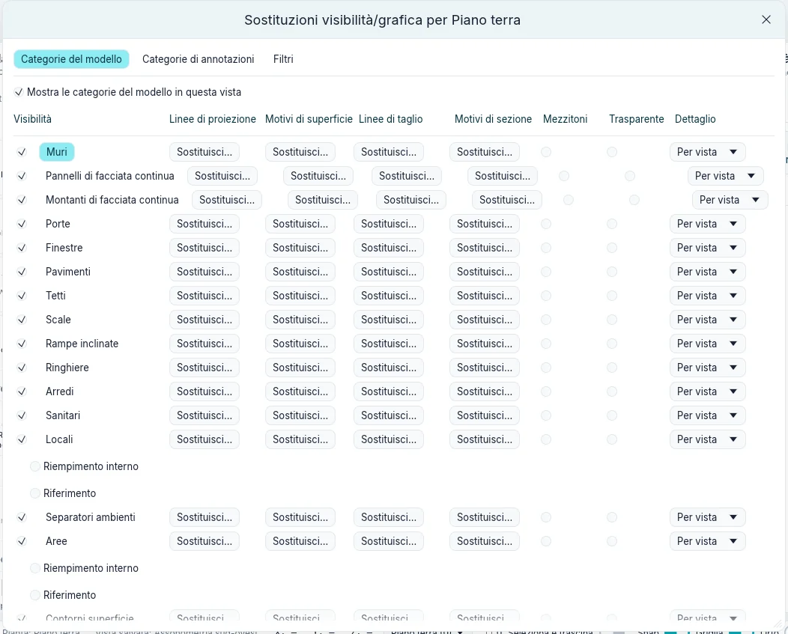
Cancella sostituzioni riporta le righe selezionate agli stili per categoria. Le modifiche si vedono subito: Applica le conserva e lascia la finestra aperta, Annulla (o la × della finestra) annulla ciò che non è stato applicato, OK le conserva e chiude.
Un singolo elemento può avere una grafica propria in una vista: selezionalo, poi clic destro ▸ Grafica personalizzata ▸ Per elemento… (oppure il gruppo Vista della scheda contestuale). Grafica elemento specifica della vista ha Visibile, Mezzitoni, Trasparente, i motivi di superficie e di sezione e le linee di proiezione e di taglio. Valgono solo in questa vista, sopra quelli della categoria e dei filtri.
Filtri
Viste ▸ Grafica ▸ Filtri elenca i filtri del progetto: Nuovo, Duplica, Rinomina, Elimina. Un filtro ha delle categorie e fino a quattro regole sui loro parametri, che un elemento deve soddisfare tutte.
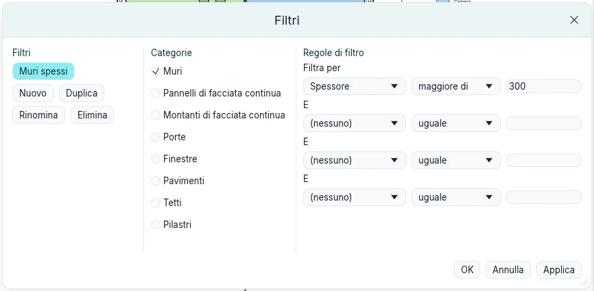
In Visibilità e grafica ▸ Filtri, Aggiungi applica un filtro alla vista; la sua riga imposta poi visibilità, linee, Mezzitoni e Trasparente per gli elementi che lo superano. Dove i filtri sono in disaccordo, vince quello più in alto nell'elenco: Su e Giù spostano il filtro selezionato.
Modelli vista
Viste ▸ Grafica ▸ Modelli vista ▸ Crea modello da vista corrente conserva, con un nome, scala, dettaglio, stile grafico, altezze di taglio e grafica della vista come modello. Modelli vista ▸ Applica modello alla vista corrente li assegna a un'altra vista dello stesso tipo: una pianta (anche una seconda pianta di un livello), una sezione o un prospetto, oppure una vista 3D. Una vista non segue le modifiche successive del suo modello finché questo non viene applicato di nuovo, e la grafica dei singoli elementi non fa mai parte di un modello.
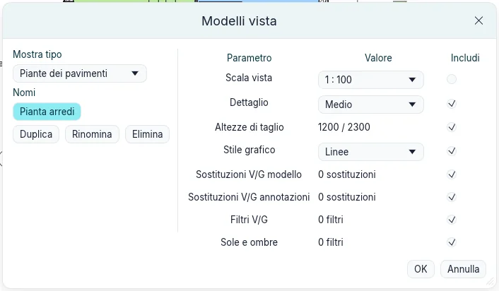
Gestione delle viste
Clic destro su una vista nell'Indice del progetto:
- Duplica vista ▸ Duplica copia la vista con le sue proprietà; Duplica con dettagli copia anche le sue quote, testi, etichette e dettagli 2D. La copia si apre;
- Rinomina… chiede il nuovo nome (Rinomina vista); i nomi restano univoci tra le viste.
Viste ▸ Finestre ▸ Affianca mostra tutte le viste aperte una accanto all'altra, riempiendo l'area di disegno: con tre finestre, quella attiva a sinistra a tutta altezza e due impilate a destra.
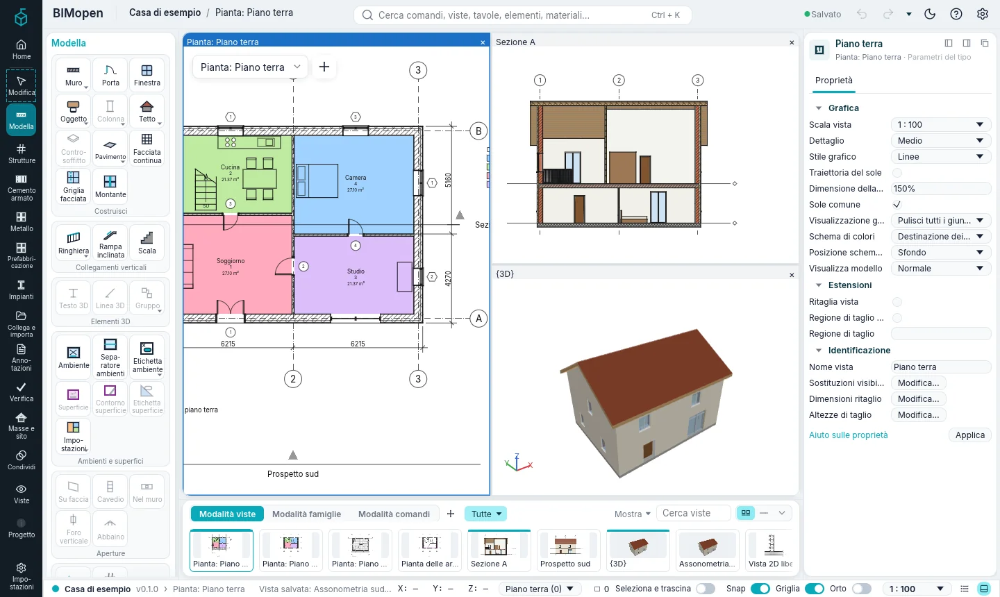